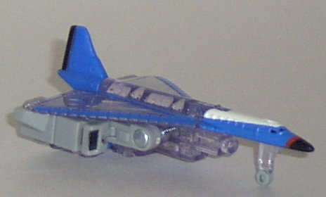
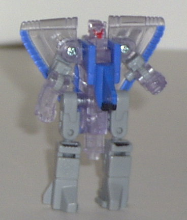
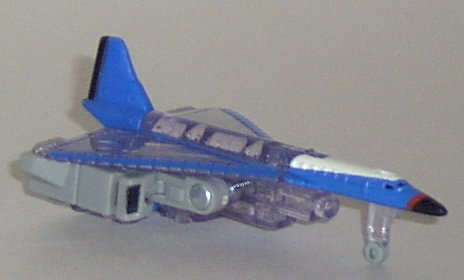
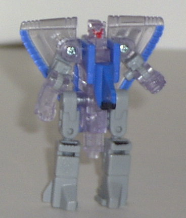
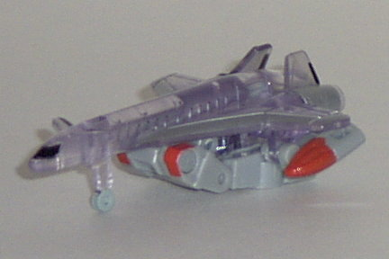
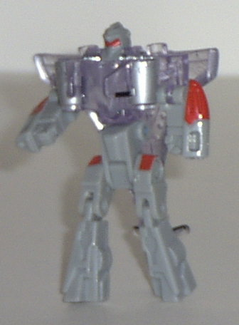
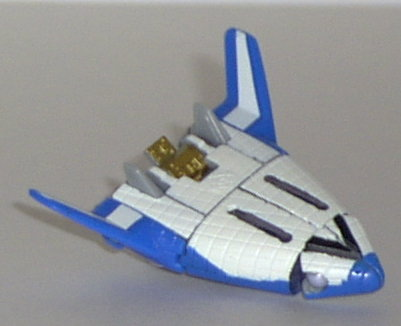
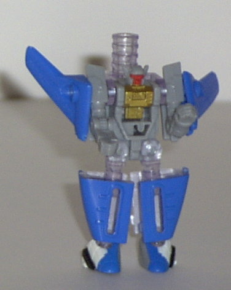
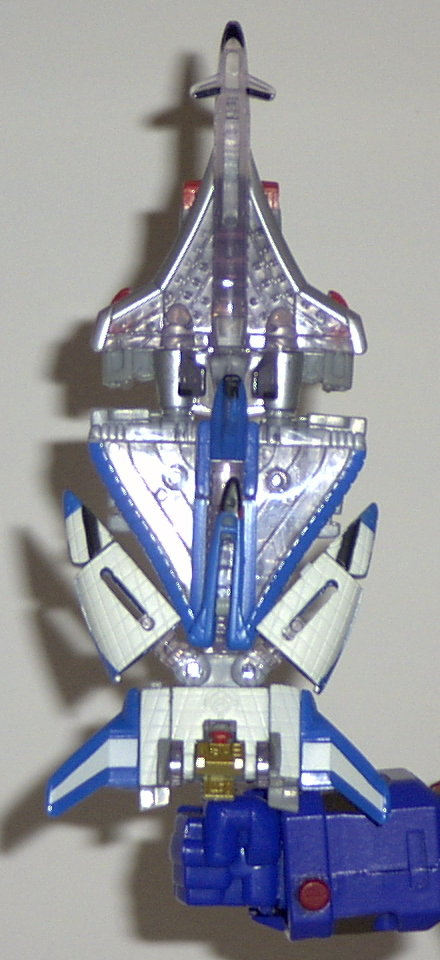

Jetstorm
Jetstorm
 
Difficulty of Transformation : Easy
Color Scheme : Transparent lightly purplish plastic, blue, light gray, and some black, white, and bright red
Individual Rating : 6.8
Air
Defense Team
Allegiance
: Minicon
Size
: Mini-Con (3-pack)
Team Gimmick
: Ability to combine
into the
Star Saber
sword
Overall Rating
: 5.6
Jetstorm


Difficulty of Transformation
: Easy
Color Scheme
: Transparent lightly
purplish plastic, blue, light gray, and some black, white, and bright red
Individual Rating
: 6.8
Vehicle mode is an airplane.
This mode is rather nice, considering the tiny scale of it. It's very detailed,
both paint-wise and mold-wise, with little windows even etched into the
sides- and the front teeny tiny cockpit windows are even painted! Heck,
there's even a mini fold-out landing gear. Cuuuute! The only real problem
I have with this mode is the robot extras hanging on the bottom. Although
it ruins the "sleekness" of the plane from a side view, it's tucked rather
efficiently under the plane mode, with just the very top of the knee "sticking
out" from the side. It also gives the transparent wings a more "solid"
view from the top, so it hinders as much as it helps, really. The Minicon
port is on the underside, in the center of the bulk of the plane mode.
Robot mode is pretty
nice, although the transparent plastic tends to hinder it quite a bit,
moreso than the other two 'bots in the Air Defense Team. See, practically
all of Jetstorm's body is transparent except for his legs, which... looks
kinda weird. The detailing is still pretty good, though, and the wings
complement the mode rather than hinder it. The plane nose is also folded
up onto the back, so it doesn't get in the way. Jetstorm's chest plate-
made up of the tail of the plane mode- sticks out farther, than I'd like,
however. Jetstorm has excellent articulation for a Minicon- he can move
at the shoulders, elbows, knees (at two joints), and the hips. His Minicon
symbol is engraved on his right knee.
Jetstorm is a nice all-around
Minicon, although he suffers from all the transparent plastic in him, which
takes away from what would otherwise be a solid look. He has a few other
minor flaws, but nothing really bad.
Runway


Difficulty of Transformation
: Very
Easy
Color Scheme
: Transparent lightly
purplish plastic, light gray, silver, bright red, and some black
Individual Rating
: 4.6
Vehicle mode is a jet-
I think it's called a Concorde, if I'm not mistaken. Anyway, this mode,
as you can easily see, suffers immensely from having practically the whole
robot mode sticking out from its underside. And, unlike Jetstorm, Runway's
robot kibble doesn't intergrate itself into the alt mode well at all- it
sticks out everywhere- even the hands, which have "engines" on the sides
to help in trying to intergrate them into this mode, stay at an awkward
angle in this mode rather than just horizontal. Not to mention you can
clearly see the hands sticking out of the back... However, that major complaint
aside, the rest of the mode is all right, with superb mold and paint detailing
for such a small Minicon. Again, all of the windows are molded onto the
side of this tiny thing (although only the front one is painted). There's
also a nice "bubble" pattern detailed on the wings, and Runway has a fold-out
landing gear, just like Jetstorm. Runway also has the rather pointless
distinction of having two Minicon ports on his underside, both of them
practically right next to each other. They're both slightly off-center,
though, and as such, he can't fit onto a larger Transformer's appendage
without being obviously off-center.
Runway's robot mode
is pretty bad. Although his head and chest look alright, his legs are two
skinny, and, combined with his waist, don't "lock into" anything, so you
have him almost always standing at an awkward angle. His arms also can't
move much, as the engines on the sides of his chest get in the way. In
addition, the cockpit does not fold up like Jetstorm's does, so Runway
is left with an odd-looking structure coming out of his rear... Runway
also has rather dismal articulation for a Minicon, it just being limited
to his elbows (no shoulder articulation), his hips, and his knees. His
head can also move a little back and forth, but it looks odd if you have
it at anything other than a central position. The Minicon symbol is very
hard to find, as it's barely noticeable on the transparent plastic on the
top of Runway's left wing-shoulder.
Runway has at least
one huge problem wrong with both of his modes, and, as such, is easily
the weakest of the Air Defense Team. Meh.
Sonar


Difficulty of Transformation
: Very
Easy
Color Scheme
: White, blue, light
gray, transparent lightly purplish plastic, and some black, dull gold,
and bright red
Individual Rating
: 7.6
Vehicle mode is an experimental
space shuttle prototype. Kinda cool to see such a "might-have-made-it"
vehicle get made into a Transformer, really. Anyways, this mode is practically
perfect all around, around with good mold detailing and GREAT paint detailing.
If you asked for anything more, than you probably should stick to McFarlane
statues, my friend. However, there is one GLARING problem with Sonar here,
and it's a side effect of him forming the handle of the Star Saber. The
handle just sticked out blatantly from the bottom, and considering that
Sonar has no landing gear or anything to stablize him, it's impossible
to keep him horizontal on any surface- he always leans to one side as a
result of that stupid handle. Sonar also has the same pointless characteristic
of a second Minicon power on his underside, and suffers from the same problems
there as Runway does. His Minicon symbol is on the top of this mode, just
slightly to the rear of center.
Sonar's robot mode is
dang cool, and definitely the one that stands out the most amongst the
Air Defense Team members. Unlike the other two members, Sonar is mostly
made of solid, not transparent, plastic, so he does't suffer from not looking
"solid" in this mode. The handle also doesn't interfere with this mode
as it does with the alt mode, as it just hangs off Sonar's back here and
doesn't interfere at all. In fact, it almost looks like he has his own
sword sheathed back there... Anyway, the mold and paint detailing is all
good, as is the nifty-looking robot face and arm-wings. The only problem
I have with this mode- and it's relatively minor- is that Sonar has no
forward knee or hip articulation, just side-to-side. The other articulation
he has is good, though- his shoulders, elbows, and feet can all move in
an understandable range of motion.
Sonar's definitely the
coolest out of this bunch of Minicons, and it one of the better Minicons
overall, too. Wiggy.
Star
Saber (Gestalt form)

Difficulty of Transformation
: Very
Easy
Color Scheme
: Transparent lightly
purplish plastic, white, blue, silver, light gray, and some bright red,
black, dull gold, and black
Individual Rating
: 3.3
Behold, the Star Saber! I mean... Behold, three planes stacked on top of one another! 'Cause really, that's what it looks like. This...thing... only vaguely resembles a sword, and is entirely too thick at the "blade" portion to really imagine it actually cutting through anything. And heck, you're looking at the good side- the other side has a bunch of mini-robot parts on it. Ick. And if that weren't bad enough, this thing falls apart if you so much as look at it the wrong way. If placed in Super Optimus Prime's fist, the sword is supposed to "light up" if you press a button- that's why all the transparent plastic is there- but only the bottom third actually lights up at all. Eh.. no, I'll pass.
Sonar and Jetstorm are both pretty good Minicons, but Runway and the Star Saber are both icky. It's up to you if the good overpower the bad with this set.
Review by Beastbot